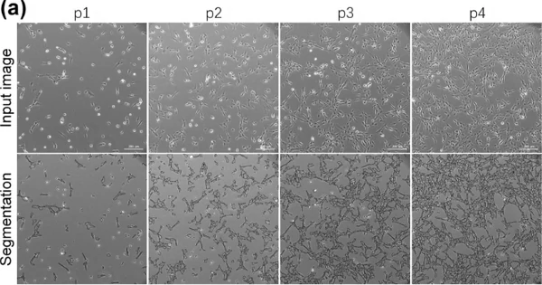

Đánh giá bằng mắt
Kỹ thuật viên ước lượng độ phủ và nhận biết tế bào lão hóa (to, dẹt, nhiều hạt) theo kinh nghiệm cá nhân.
Cuộc thi Sáng tạo Tế bào gốc 2026 · Lần thứ 11 · Chủ đề: Tế bào gốc & AI
AI đánh giá độ phủ và lão hóa tế bào gốc trung mô từ ảnh kính hiển vi
Không nhuộm, chạy trên ảnh kính hiển vi phổ thông, và biết khi nào mình không chắc: ảnh khó sẽ được chuyển cho chuyên gia thay vì đoán bừa.
Tự động hóa phân tích hình ảnh — hướng tới nuôi cấy an toàn và hiệu quả.
Tế bào gốc trung mô (MSC) có tiềm năng lớn trong y học tái tạo, nhưng đánh giá chất lượng nuôi cấy vẫn dựa nhiều vào quan sát bằng mắt. Vision-MSC phân tích ảnh kính hiển vi trường sáng và tương phản pha để ước tính độ phủ tế bào, đánh giá hình thái liên quan đến lão hóa và phát hiện bất thường, kết hợp học máy, học sâu và hiệu chỉnh độ tin cậy để hỗ trợ chuyên gia kiểm soát chất lượng nuôi cấy MSC.
01
Kỹ thuật viên ước lượng độ phủ và nhận biết tế bào lão hóa (to, dẹt, nhiều hạt) theo kinh nghiệm cá nhân.
Kết quả phụ thuộc người đánh giá, sai lệch giữa các lô và giữa các phòng lab.
Hệ thống chụp và phân tích tự động của hãng thiết bị đắt, gắn với phần cứng riêng, ít lab trong nước có.
Xây dựng công cụ AI phân tích ảnh MSC để đánh giá độ phủ tế bào, mức độ lão hóa và phát hiện bất thường, đồng thời cung cấp kết quả đáng tin cậy, dễ ứng dụng trong thực tế. Không xâm lấn, tương thích kính hiển vi phổ thông tại Việt Nam.
02
Ảnh phase-contrast/brightfield MSC công khai (Cell Tracking Challenge, BBBC, Zenodo, Figshare, Kaggle) và ảnh từ phòng thí nghiệm Việt Nam. Mỗi nguồn bắt buộc kiểm tra: giấy phép, dòng tế bào, độ phóng đại, nhãn gốc từ đâu.
Ảnh có thông tin passage (sớm/muộn) hoặc xác nhận hoạt tính SA-β-gal. Passage chỉ là chỉ dấu thay thế, chưa xác nhận lão hóa.
Tin cậy nhấtTập con chọn ngẫu nhiên, 2–3 chuyên gia gán nhãn độc lập, đo đồng thuận bằng Cohen’s κ / Fleiss’ κ. Ca mơ hồ được giữ lại để phân tích riêng.
Có kiểm địnhTỷ lệ bao phủ lấy từ phân đoạn Cellpose làm tham chiếu, kiểm tra thủ công trên một tập con.
Tham chiếu
03
Thu thập ảnh MSC và xây dựng nhãn tham chiếu, phân biệt nhóm đối chứng với nhóm có dấu hiệu lão hóa.

Kiểm tra chất lượng, chuẩn hóa ảnh và chia tập. Chống rò rỉ dữ liệu: chia theo thí nghiệm / đĩa nuôi cấy / nguồn dữ liệu, group k-fold, nhiều seed, báo cáo trung bình ± SD.

Hai đầu ra: điểm lão hóa dạng hồi quy/ordinal (thay vì 3 lớp cứng) và ước lượng độ phủ.
Baseline cổ điển để chứng minh deep learning thật sự cần thiết. Nếu không hơn được, nói thẳng.

So sánh hiệu năng và kiểm tra khả năng tổng quát hóa leave-one-dataset-out: huấn luyện trên một số nguồn, kiểm tra trên nguồn chưa thấy.

Hiệu chỉnh xác suất (calibration) và nhận diện các dự đoán chưa đáng tin cậy. Giải thích bằng Grad-CAM kèm sanity check (so với khi randomize trọng số), vì Grad-CAM dễ cho hình đẹp nhưng không đáng tin. Phân tích có hệ thống các ca sai. Ablation: bỏ augmentation, bỏ xử lý mất cân bằng, đổi độ phân giải ảnh.
Công cụ web gọn, mã nguồn mở, chạy với ảnh kính hiển vi thông thường, hỗ trợ kiểm soát chất lượng nuôi cấy MSC. Hạ tầng: Colab và mô hình pretrained, không cần thiết bị đắt.
04
Với công cụ kiểm soát chất lượng, việc từ chối đúng lúc quan trọng hơn thêm 1% accuracy. Kéo ngưỡng tin cậy để xem đánh đổi: nâng ngưỡng, mô hình trả lời ít ảnh hơn (coverage giảm) nhưng sai ít hơn (risk giảm); phần còn lại chuyển cho chuyên gia.
tự trả lời, đúng tự trả lời, sai chuyển chuyên gia
Dữ liệu mô phỏng để minh họa cơ chế; không phải kết quả của Vision-MSC.
05
Phân loại tế bào label-free bằng deep learning đã có nhiều công bố, nên đề tài không nhận điểm mới ở việc “dùng AI”. Điểm mới nằm ở:
Leave-one-dataset-out thay vì chỉ báo cáo trong cùng một nguồn, nơi con số đẹp nhưng không đại diện.
Hiệu chỉnh xác suất và cơ chế từ chối dự đoán khi ảnh nằm ngoài phân phối hoặc độ tin cậy thấp.
Tập ảnh thật từ ít nhất một phòng lab trong nước; ngưỡng cảnh báo do chuyên gia xác nhận.
Mã nguồn mở, chạy với ảnh kính hiển vi thông thường, kèm demo web.
06
Trong đánh giá độ phủ tế bào và mức độ lão hóa MSC.
Nhờ hiệu chỉnh xác suất và cơ chế từ chối dự đoán.
Tự động hóa phân tích hình ảnh, giảm phụ thuộc vào chuyên gia.
07
Vision-MSC đề xuất giải pháp mới trong tự động hóa đánh giá chất lượng tế bào gốc trung mô nhờ tích hợp các mô hình AI cùng kỹ thuật hiệu chỉnh độ tin cậy. Bằng khả năng xác định độ phủ và nhận diện sớm các bất thường hình thái từ ảnh hiển vi, công cụ cung cấp kết quả khách quan, góp phần chuẩn hóa quy trình kiểm soát chất lượng, tối ưu thời gian và giảm rủi ro vận hành trong nghiên cứu lẫn sản xuất liệu pháp tế bào.